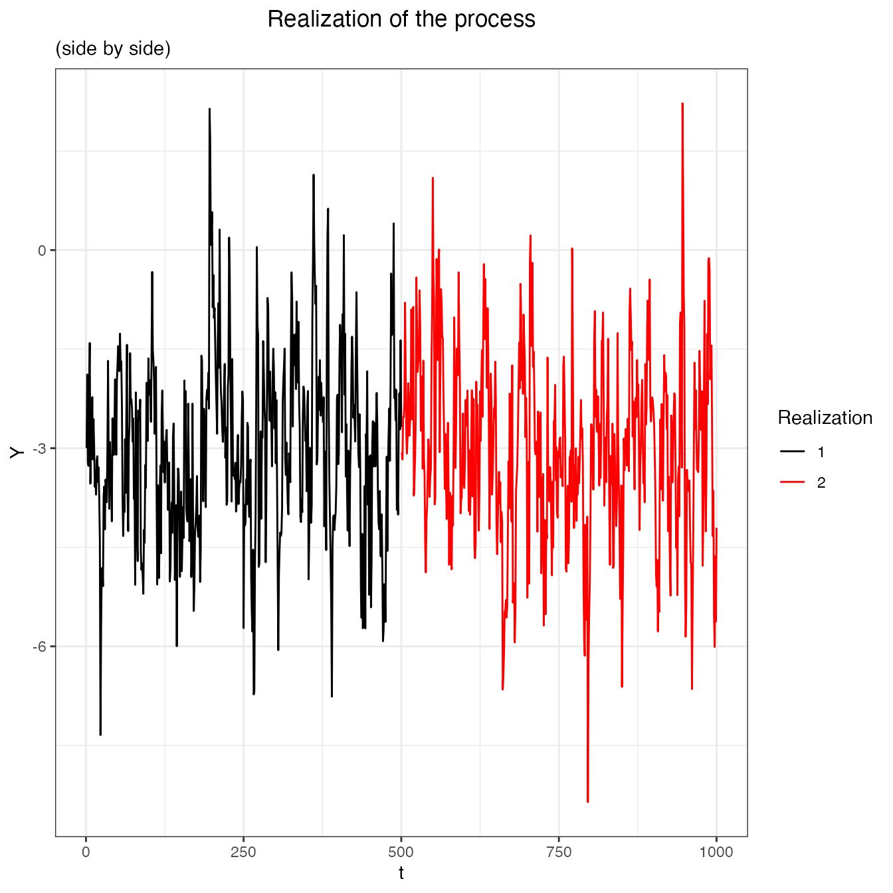
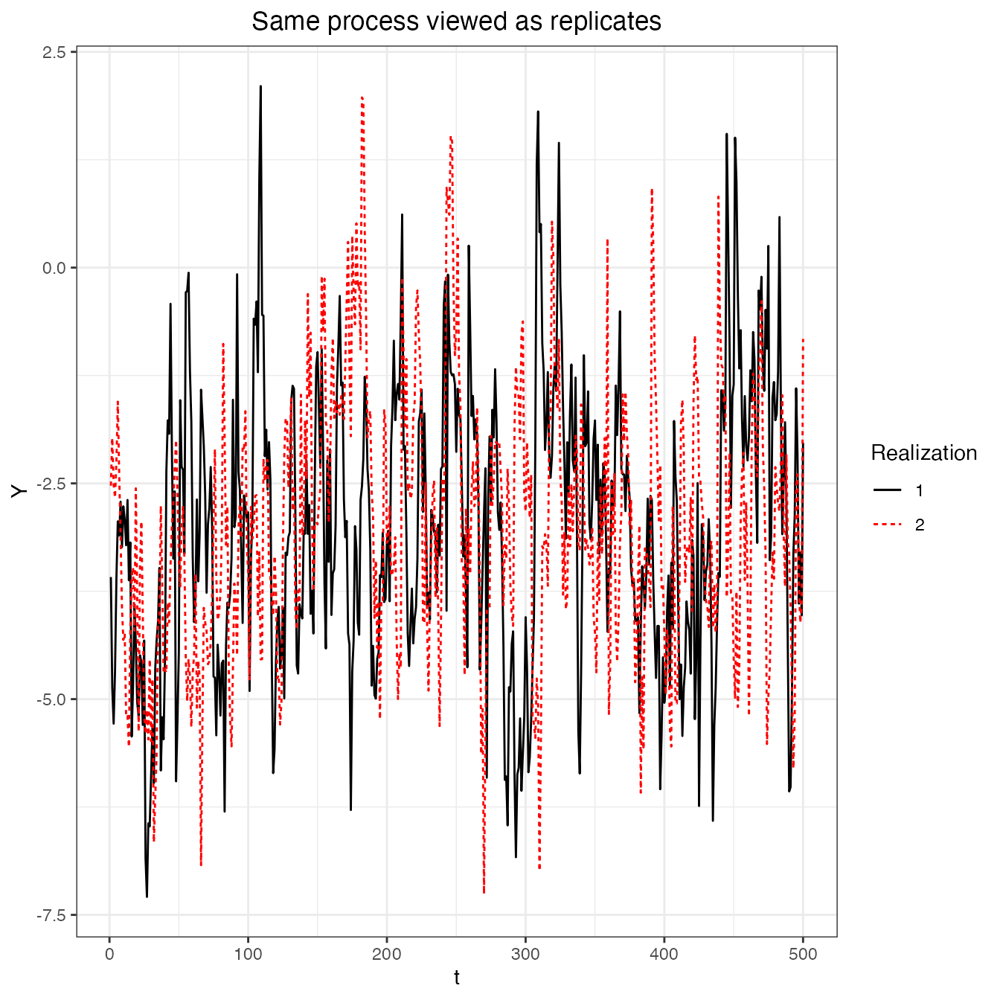
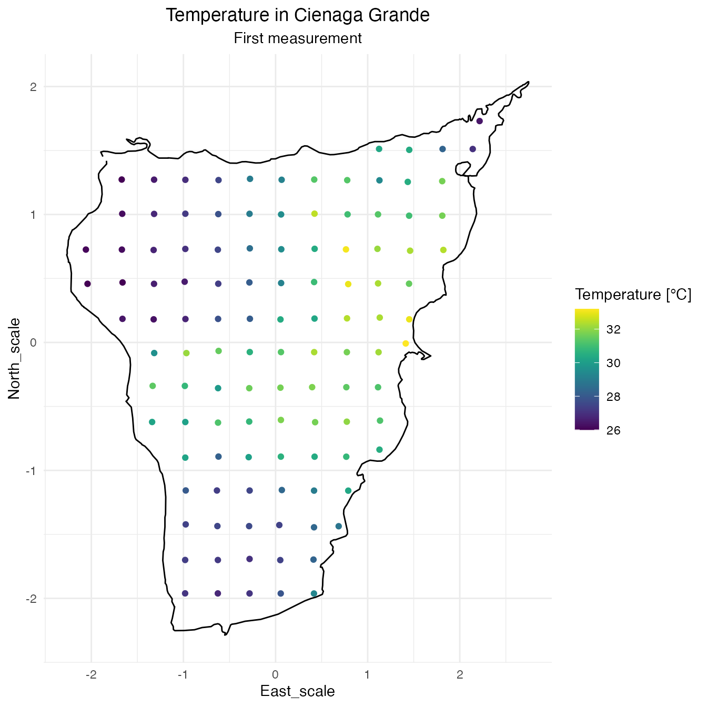
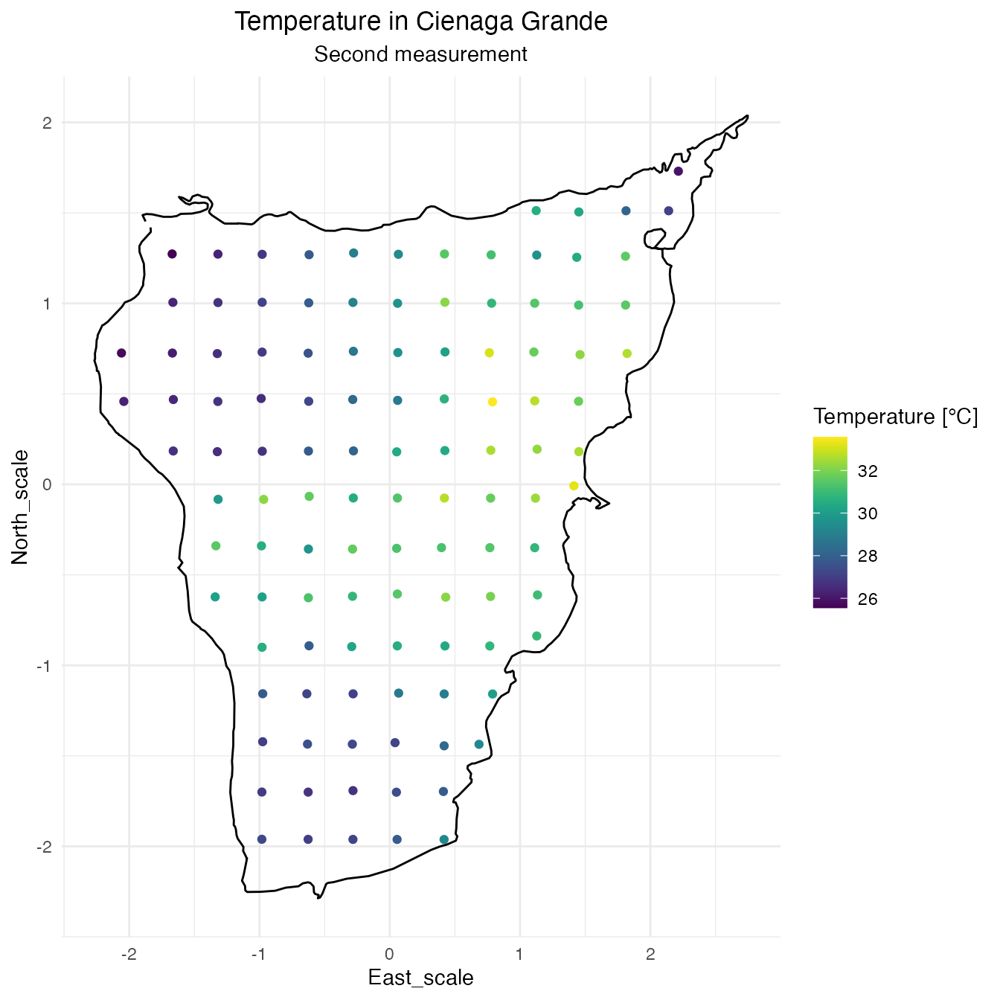
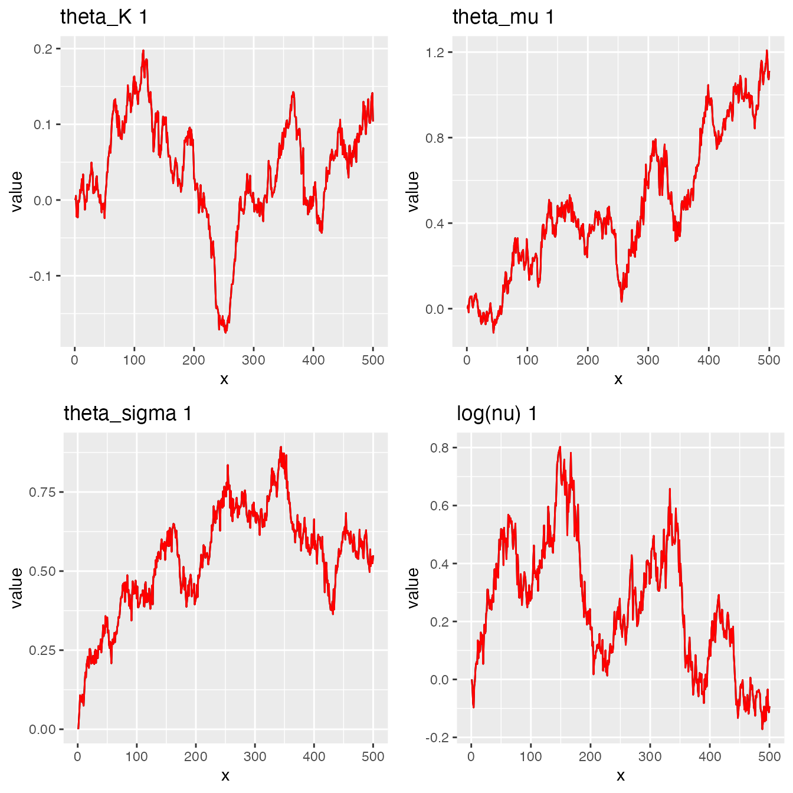

In this vignette we will introduce the feature of replicates, which
allows to include multiple realizations of the stochastic processes that
can be included in the different models offered in
ngme2.
Description
Consider a stochastic process indexed by an index set , the idea is to allow the inclusion of replicates of the process in the model.
For example, if one wants to include k realizations of an autoregressive process of order 1 with observations in the model one can do so in the following way
where denotes the observation of realization of the process for and , with and is either i.i.d. NIG or Gaussian noise.
Two approaches for specifying replicates
ngme2 supports two different styles for specifying replicates, each with its own advantages:
-
Global replicates using the
replicateargument inngme()- applies the same replicate structure to all latent processes in the model -
Flexible replicates using the
replicateargument inf()- allows individual control over replicate structure for each latent process
Global approach: replicate in ngme()
The global approach forces every latent process in the model to have the same replicate structure. This is useful when: - You have a simple model with one or few latent processes - All processes should follow the same replicate pattern - You want to ensure consistency across all model components - You have many replicates: The estimation process computes gradients for each replicate separately and sums them, which is memory-efficient for large numbers of replicates
Flexible approach: replicate in f()
The flexible approach allows different latent processes to have different replicate structures. This offers several additional advantages: - Individual control: Each latent process can have its own replicate structure - INLA-style block-diagonalization: Operators are automatically block-diagonalized across replicates - Flexible mesh support: Different meshes can be used for different replicates - Complex models: Multiple latent processes can have different replicate patterns within the same model - Computational efficiency for moderate cases: The estimation process works with block-diagonalized matrices directly, which is more efficient when dimensions and number of replicates are not too large
Mathematical framework
When using the replicate argument in f(),
the precision matrix
is automatically block-diagonalized:
For a generic operator with replicates, the resulting structure becomes:
Similarly, the observation matrix is constructed for each replicate and then block-diagonalized:
Usage
AR(1) model
The following example will show how to use the replicates feature for an AR(1) model using both approaches.
Suppose one has a response variable with observations
library(ngme2)
#> This is ngme2 of version 0.9.3
#> - See our homepage: https://davidbolin.github.io/ngme2 for more details.
#>
#> Attaching package: 'ngme2'
#> The following object is masked from 'package:stats':
#>
#> ar
library(ggplot2)
# creating ar1 process
n <- 500
myar <- ngme2::f(1:n, model = ar1(rho = .75), noise = noise_nig())
W1 <- simulate(myar, seed = 314)[[1]] # simulating one realization of the process
W2 <- simulate(myar, seed = 159)[[1]] # simulating another realization of the process
# Creating the response variable from the process and adding measurement noise
Y <- -3 + c(W1, W2) + rnorm(2 * n, sd = .2)
df <- data.frame(Y, idx = 1:(2 * n), group = rep(1:2, each = n)) # creating the data frame to fit the model later
Note that if both processes are considered as a single one instead of two realizations of the same process, then the first observation of the second realization is assumed to be dependent on the last one of the first process, which might no be desirable in some cases.

Comparison of K matrices
This can be seen in the matrix of the model (all the models in the have the same form ), for instance, consider the following little example to illustrate the difference between treating the data as a single process vs. replicates.
# No replicates: treats as single AR(1) process with 6 time points
no_replicates <- ngme2::f(1:6, model = ar1(rho = .5), noise = noise_normal())
# With replicates in f(): 2 replicates, each with 3 time points
with_replicates_f <- ngme2::f(
rep(1:3, 2),
model = ar1(rho = .5),
replicate = rep(1:2, each = 3),
noise = noise_normal()
)
# Compare K matrices
cat("K matrix without replicates (6x6 single process):\n")
#> K matrix without replicates (6x6 single process):
print(as.matrix(no_replicates$operator$K))
#> [,1] [,2] [,3] [,4] [,5] [,6]
#> [1,] 0.8660254 0.0 0.0 0.0 0.0 0
#> [2,] -0.5000000 1.0 0.0 0.0 0.0 0
#> [3,] 0.0000000 -0.5 1.0 0.0 0.0 0
#> [4,] 0.0000000 0.0 -0.5 1.0 0.0 0
#> [5,] 0.0000000 0.0 0.0 -0.5 1.0 0
#> [6,] 0.0000000 0.0 0.0 0.0 -0.5 1
cat("\nK matrix with replicates (3x3 for each replicate, block-diagonal):\n")
#>
#> K matrix with replicates (3x3 for each replicate, block-diagonal):
print(as.matrix(with_replicates_f$operator$K))
#> [,1] [,2] [,3] [,4] [,5] [,6]
#> [1,] 0.8660254 0.0 0 0.0000000 0.0 0
#> [2,] -0.5000000 1.0 0 0.0000000 0.0 0
#> [3,] 0.0000000 -0.5 1 0.0000000 0.0 0
#> [4,] 0.0000000 0.0 0 0.8660254 0.0 0
#> [5,] 0.0000000 0.0 0 -0.5000000 1.0 0
#> [6,] 0.0000000 0.0 0 0.0000000 -0.5 1Note how in the replicate version, the entry is zero, meaning there’s no dependence between the last observation of the first replicate and the first observation of the second replicate.
Model fitting: global vs flexible approach
Global approach (replicate specified in
ngme()):
# Global replicate approach
mod_replicates_global <- ngme(
formula = Y ~ f(
c(1:n, 1:n),
model = ar1(),
noise = noise_nig()
),
replicate = df$group,
data = df,
control_opt = control_opt(
print_check_info = FALSE
)
)
mod_replicates_globalFlexible approach (replicate specified in
f()):
# Flexible replicate approach
mod_replicates_flexible <- ngme(
formula = Y ~ f(
rep(1:n, 2),
model = ar1(),
replicate = df$group,
noise = noise_nig()
),
data = df,
control_opt = control_opt(
verbose = TRUE,
print_check_info = FALSE
)
)
mod_replicates_flexibleThe flexible approach provides several benefits: - The replicate structure is defined directly with the latent field - Automatic block-diagonalization of operators and A matrices - Support for different meshes per replicate - Allows different latent processes to have different replicate structures
SPDE Matern model
The following data is taken from the swamp of Cienaga Grande in Santa Marta, Colombia. There is a total of 114 locations where some properties of the swamp were measured. Those measurements were taken twice, however there is no information available about their chronological order so this data cannot be treated as spatiotemporal, despite that, the multiple measurements can be treated as replicates.
In this particular case the temperature is the feature that will be modeled.
# library(ngme2)
library(ggplot2)
# reading the data and the boundary of Cienaga Grande
data(cienaga)
data(cienaga.border)
# scale the coords
cienaga.border[, 1] <- (cienaga.border[, 1] - mean(cienaga$East)) / sd(cienaga$East)
cienaga.border[, 2] <- (cienaga.border[, 2] - mean(cienaga$North)) / sd(cienaga$North)
cienaga <- within(cienaga, {
East_scale <- (East - mean(East)) / sd(East)
North_scale <- (North - mean(North)) / sd(North)
})
# creating label for the measurement group
cienaga$measurement <- rep(1:2, each = (n <- nrow(cienaga) / 2))

Now we briefly show how to fit the model using both replicate approaches.
# creating the mesh
mesh <- fmesher::fm_mesh_2d(
loc.domain = cienaga.border,
max.edge = c(0.4, 1),
max.n = 500
)
mesh$n
#> [1] 455
Model fitting: global vs flexible approach for spatial data
Global approach:
# Global replicate approach
fit_global <- ngme(
formula = temp ~ 1 +
f(as.matrix(cienaga[, c("East_scale", "North_scale")]),
model = matern(
mesh = mesh
),
name = "spde",
noise = noise_nig()
),
data = cienaga,
replicate = cienaga$measurement,
control_opt = control_opt(
estimation = TRUE,
iterations = 500,
n_min_batch = 10,
n_parallel_chain = 4,
print_check_info = FALSE
),
debug = FALSE
)Flexible approach:
# Flexible replicate approach
fit_flexible <- ngme(
formula = temp ~ 1 +
f(as.matrix(cienaga[, c("East_scale", "North_scale")]),
model = matern(
mesh = mesh,
),
replicate = cienaga$measurement,
name = "spde",
noise = noise_nig()
),
data = cienaga,
control_opt = control_opt(
estimation = TRUE,
iterations = 500,
n_min_batch = 10,
n_parallel_chain = 4,
print_check_info = FALSE
),
debug = FALSE
)Using different meshes for different replicates
One powerful feature of the flexible approach is the ability to use different meshes for different replicates:
# Create separate meshes for each measurement
coords1 <- as.matrix(cienaga[cienaga$measurement == 1, c("East_scale", "North_scale")])
coords2 <- as.matrix(cienaga[cienaga$measurement == 2, c("East_scale", "North_scale")])
mesh1 <- fmesher::fm_mesh_2d(coords1, cutoff = 0.1)
mesh2 <- fmesher::fm_mesh_2d(coords2, cutoff = 0.1)
# Use different meshes for different replicates (only possible with flexible approach)
fit_multi_mesh <- ngme(
formula = temp ~ 1 +
f(as.matrix(cienaga[, c("East_scale", "North_scale")]),
model = matern(
mesh = list(mesh1, mesh2), # List of meshes
),
replicate = cienaga$measurement,
name = "spde",
noise = noise_nig()
),
data = cienaga,
control_opt = control_opt(estimation = FALSE) # Just for structure
)Additional examples
RW1 model with replicates
# Random walk model with 3 replicates
base_locations <- 1:10
locations <- rep(base_locations, 3)
replicates <- factor(rep(1:3, each = length(base_locations)))
rw1_replicates <- f(
map = locations,
model = rw1(),
replicate = replicates,
noise = noise_normal()
)
cat("RW1 with 3 replicates:\n")
#> RW1 with 3 replicates:
cat("- Base length:", length(base_locations), "\n")
#> - Base length: 10
cat("- Number of replicates:", 3, "\n")
#> - Number of replicates: 3
cat("- K matrix size:", paste(dim(rw1_replicates$operator$K), collapse = " x "), "\n")
#> - K matrix size: 30 x 30
cat("- h vector length:", length(rw1_replicates$operator$h), "\n")
#> - h vector length: 30The K matrix is automatically block-diagonalized:
# Show the structure of the precision matrix for RW1 replicates
K_structure <- as.matrix(rw1_replicates$operator$K)
K_structure[K_structure != 0] <- 1 # Show only the sparsity pattern
# Display first few rows and columns to show block structure
print(K_structure[1:15, 1:15])
#> [,1] [,2] [,3] [,4] [,5] [,6] [,7] [,8] [,9] [,10] [,11] [,12] [,13]
#> [1,] 1 1 1 1 1 1 1 1 1 1 0 0 0
#> [2,] 1 1 0 0 0 0 0 0 0 0 0 0 0
#> [3,] 0 1 1 0 0 0 0 0 0 0 0 0 0
#> [4,] 0 0 1 1 0 0 0 0 0 0 0 0 0
#> [5,] 0 0 0 1 1 0 0 0 0 0 0 0 0
#> [6,] 0 0 0 0 1 1 0 0 0 0 0 0 0
#> [7,] 0 0 0 0 0 1 1 0 0 0 0 0 0
#> [8,] 0 0 0 0 0 0 1 1 0 0 0 0 0
#> [9,] 0 0 0 0 0 0 0 1 1 0 0 0 0
#> [10,] 0 0 0 0 0 0 0 0 1 1 0 0 0
#> [11,] 0 0 0 0 0 0 0 0 0 0 1 1 1
#> [12,] 0 0 0 0 0 0 0 0 0 0 1 1 0
#> [13,] 0 0 0 0 0 0 0 0 0 0 0 1 1
#> [14,] 0 0 0 0 0 0 0 0 0 0 0 0 1
#> [15,] 0 0 0 0 0 0 0 0 0 0 0 0 0
#> [,14] [,15]
#> [1,] 0 0
#> [2,] 0 0
#> [3,] 0 0
#> [4,] 0 0
#> [5,] 0 0
#> [6,] 0 0
#> [7,] 0 0
#> [8,] 0 0
#> [9,] 0 0
#> [10,] 0 0
#> [11,] 1 1
#> [12,] 0 0
#> [13,] 0 0
#> [14,] 1 0
#> [15,] 1 1Summary
ngme2 provides two approaches for handling replicates:
Global approach (replicate in ngme())
- Applies the same replicate structure to all latent processes
- Simple and consistent across the entire model
- Suitable for models with uniform replicate patterns
Flexible approach (replicate in f())
- Individual control: Each latent process can have its own replicate structure
- Automatic block-diagonalization: Operators and A matrices are automatically structured for replicates
- Flexible mesh support: Different meshes can be used for different replicates
- INLA-style implementation: Follows the same approach as INLA for handling replicates
- Complex models: Multiple latent processes can have different replicate patterns within the same model
Choose the approach that best fits your modeling needs - use the global approach for simple, uniform replicate structures, and the flexible approach when you need more control or have complex models with varying replicate patterns.
Computational considerations
The two approaches handle the estimation process differently:
Global approach: Computes gradients for each replicate separately and sums them. This is memory-efficient when you have many replicates, as it avoids creating large block-diagonal matrices in memory.
Flexible approach: Creates block-diagonal structures for all replicates together. This is computationally more efficient when the dimension is not too high or when you don’t have too many replicates, as it can take advantage of sparse matrix operations on the entire structure.
Rule of thumb: Use the global approach when you have many replicates (e.g., >50) or high-dimensional problems where memory is a concern. Use the flexible approach for moderate numbers of replicates when you need the additional modeling flexibility or when computational efficiency is important.